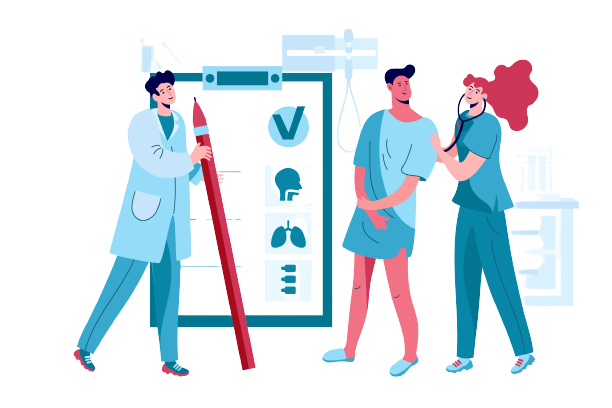

At Home Testing

Order and receive a test kit: Patients can order a test kit
online or over the phone, which will be shipped directly to their
home. The kit usually contains detailed instructions on how to collect
the sample and return it to the hospital.
Collect the sample: Depending on the type of test, patients may
need to provide a blood, urine, or saliva sample. The instructions
provided in the test kit will guide patients on how to collect the
sample correctly.
Return the sample: After collecting the sample, patients will
need to return it to the hospital. This may involve sending the sample
back in a prepaid envelope or dropping it off at a designated
location.
Receive the results: Once the hospital receives the sample, it
will be processed and analyzed. Patients will usually receive their
test results within a few days, either by phone, email, or through an
online patient portal.
COVID-19 testing: Many hospitals now offer at-home COVID-19
testing to help individuals monitor their health and reduce the risk
of spreading the virus.
STI testing: Home testing kits for sexually transmitted
infections (STIs) allow patients to collect samples in the privacy of
their own home and receive discreet and confidential results.
Blood testing: Some hospitals offer home testing kits for
common blood tests, such as cholesterol and glucose testing, which can
help patients monitor their health and manage chronic conditions.
It's important to note that while home testing facilities can be
convenient, they may not always be the most accurate or reliable
option.
Patients should always consult with their healthcare provider to
determine if home testing is a good option for them and to ensure they
receive proper follow-up care based on their results.